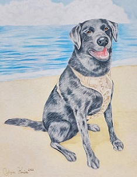

Would you like your own personalized pet portrait?
Prices and Sizes
Colored pencil
Size
Price
9x12
$65
11x14
$75
Digital
187x220 mm
$20
I offer two sizes for colored pencil portraits. I will work with you to create a preliminary sketch of the drawing and once it is to your satisfaction, I will create the final product and send it to you. Shipping is included in the cost.
Past Colored Pencil Portraits
Colored pencil portrait of Oakley
Colored pencil portrait of Davinci
Colored pencil portrait of Molly

Colored pencil portrait of Otis
I will work with you to create a preliminary sketch of the drawing and once it is to your satisfaction, I will create the final product and send you the file in whatever type you prefer: JPEG, PNG, TIF, etc.
Past Digital Portraits
Digital drawing of Chapo
Digital drawing of Lawrence
Digital drawing of Loki